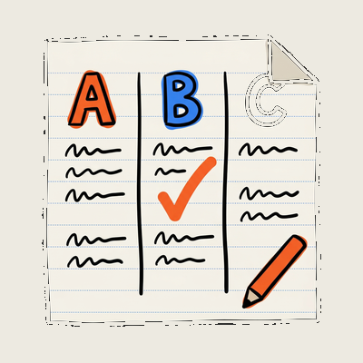
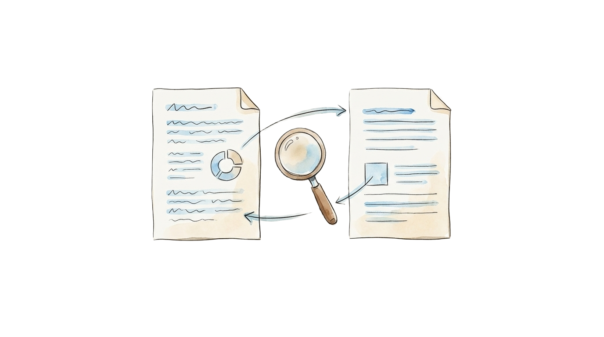

KI ist im Unterricht.
Was jetzt?
Lernende nutzen sie. Lehrpersonen auch.
Was fehlt, ist die Methode. Nicht ein weiteres Tool.

Manuel Hirschi
gibb Bern · PH FHNW · UZH

KI verbieten?
Das ist nicht mehr die Frage.
Lernende generieren Texte in Sekunden. Lehrpersonen differenzieren Material, entwerfen Prüfungen, bereiten Lektionen vor. Schneller als je zuvor.
Das ist nicht das Problem.
Aber wer prüft, was zurückkommt?
Du kennst dein Material.
Das ist dein Vorteil.
KIalog ist kein Kurs über KI. Es ist eine Methode, die mit dem anfängt, was du schon hast.
Du lädst dein Unterrichtsmaterial. KI skaliert, differenziert, entwirft. Du weisst, was darin steht. Und merkst sofort, wenn etwas nicht stimmt.
Genau das ist KI-Urteilskompetenz. Und genau das fordern sechs Rahmenwerke heute schon.

Prüfen
Stimmt das fachlich? Fehlt etwas? Wo hat die KI vereinfacht, was nicht vereinfacht werden darf?
Urteilen
Übernehmen, anpassen oder verwerfen. Nicht die KI entscheidet über Qualität. Du entscheidest.
Belegen
Warum hast du was geändert? Dein Denkprozess wird sichtbar. Für dich, für deine Lernenden, für dein Team.
Dieselbe Methode. Egal ob Arbeitsblatt, Prüfung oder Feedback.
So sieht das aus.
Kein Theoriebeispiel. Echtes Material, echte Entscheidung.

Arbeitsblatt auf 3 Niveaus
Du hast eine EBA-Klasse mit DaZ-Anteil. KI differenziert dein Arbeitsblatt auf drei Niveaus. Du prüfst. Was stimmt sprachlich? Was fehlt fachlich? Was übernimmst du?
KI schreibt «Chef» statt «Berufsbildner:in» und vergisst Sprachstützen für DaZ-Lernende. Du weisst das sofort. Du korrigierst es in 8 Minuten.
Walkthrough ansehen →
Prüfung mit Prozessfokus
KI-generierte Texte als Prüfungsgrundlage. Lernende vergleichen, urteilen, begründen. ChatGPT kann die Aufgabe nicht lösen, weil das eigene Urteil verlangt ist.
Walkthrough ansehen →
KI-Feedback auf Fallanalyse
Von 4 KI-Feedbackpunkten: 1 übernommen, 2 verworfen, 1 selbst ergänzt. Das ist KI-Urteilskompetenz. Nicht Misstrauen, sondern Einordnung.
Walkthrough ansehen →Überzeugt? Zeig das deiner Schulleitung.
Infos für Schulleitungen →Für Schulleitungen und
Abteilungsleitungen
KI-Urteilskompetenz ist in sechs Rahmenwerken verbindlich verankert, vom nRLP bis zum EU AI Act. KIalog macht das für Ihr Team greifbar. Praxisnah, an Ihrem Material, an einem halben Tag.
Alle Formate sind als SCHILW buchbar. Im Kanton Bern können Kosten über die BKD rückerstattet werden.
Was Ihr Team nach einem Halbtag hat
Eine gemeinsame Methode. Fertige Bausteine für den nächsten Unterrichtstag. Das Wissen, welche Tools an Ihrer Schule datenschutzkonform funktionieren.
Geeignet für Fachgruppen und Abteilungen von 6 bis 16 Personen.
Ein CAS-Programm kostet CHF 9'900 pro Person. KIalog bringt Ihr ganzes Team für einen Bruchteil weiter. An einem halben Tag, mit Ihrem Material.
Jetzt anfragenIch melde mich innert 48 Stunden mit einem unverbindlichen Vorschlag.
Ich unterrichte das,
was ich erforsche.
An der gibb Bern begleite ich Lernende in Allgemeinbildung und Deutsch. Täglich, mit KI. An der PH FHNW doziere ich in den Berufspraktischen Studien. An der UZH forsche ich zu einer Frage. Wie lernt man, KI-Output selbst zu beurteilen?
18 Jahre Unterricht, von der Primarschule bis zur Hochschule. Was ich erforsche, unterrichte ich. Was ich unterrichte, funktioniert.
Wer mit KI arbeitet, führt einen Dialog. KIalog zeigt, wie man ihn gewinnt.
«...»— Lehrperson, gibb Bern (Pilot Frühjahr 2026)
«...»— Dozierende, PH FHNW (Pilot Frühjahr 2026)
Einstieg. Tiefe. Dauer.
Du wählst.
Alle Formate werden von der Schule gebucht und bezahlt. Du bringst die Idee, deine Schulleitung den Auftrag.
Impuls
60–90 Minuten · Weiterbildungstag, Konferenz oder Teamtag. Kein Vortrag. Eine Demonstration mit echtem Material.
KIalog Workshop
Halbtag oder Ganztag · Inhouse, 6–16 Teilnehmende. Du arbeitest mit deinem Material. Du gehst mit fertigen Bausteinen und einer Checkliste raus.
Fachbegleitung
1 Semester · Workshop, Training, Begleitung. Für Teams, die wollen, dass es bleibt. Ganze Fachgruppe oder Abteilung, ein Semester lang.
Alle Formate als SCHILW buchbar. Reisekosten nach Aufwand.
Häufige Fragen
Nein. Du musst nicht mal KI mögen. Du musst einmal sehen, was mit deinem eigenen Material möglich ist. Der Rest kommt von selbst.
Gesamte Sek II. Berufsfachschulen, Gymnasien, FMS, Brückenangebote und Pädagogische Hochschulen. Die Beispiele im Workshop passen wir an deine Stufe und dein Fach an.
Ja. Überall wo Texte entstehen, gelesen oder beurteilt werden, braucht es KI-Urteilskompetenz. Das betrifft fast jedes Fach.
NotebookLM ist ein KI-Tool von Google. Du lädst dein eigenes Material hoch und bekommst Antworten, die sich direkt auf deine Quellen stützen. Nichts Erfundenes. Du siehst immer, woher der Output kommt. KIalog funktioniert aber auch mit Claude oder ChatGPT.
Daten von Lernenden kommen nie in KI-Tools. Wir arbeiten mit deinem eigenen Material oder anonymisierten Beispielen. Auf Wunsch zeige ich lokale Lösungen, die komplett offline funktionieren.
Eine gute Prüfung verlangt, was KI nicht zuverlässig kann. Persönlichen Bezug, lokalen Kontext, mündliche Begründung, Prozessdokumentation. Im Workshop lernst du, solche Aufgaben zu formulieren.
Einstieg ab CHF 800 für einen Impuls-Slot am Weiterbildungstag. Halbtag CHF 1'800. Ein Semester Begleitung CHF 9'000. Nach einem Halbtag hat Ihr Team eine gemeinsame Methode und fertige Bausteine für den nächsten Unterrichtstag.
Im Kanton Bern können Schulen Kosten über die BKD rückerstatten lassen. Alle Formate sind als SCHILW buchbar.
KI-Urteilskompetenz ist in sechs Rahmenwerken verbindlich verankert. nRLP ABU, LP21, OECD, UNESCO, EU AI Act, LCH. KIalog macht genau das greifbar.
Andere Kurse schulen Tools. KIalog schult das Urteil. Mit dem Material, das Ihre Lehrpersonen schon haben. Kein Fremdmaterial, keine Theorie ohne Praxisbezug.
Impuls, 60–90 Minuten. Workshop, ein halber oder ganzer Tag. Danach keine Pflicht zur Weiterarbeit. Wer will, kann.
Manuel Hirschi. Lehrperson, Dozent und Forscher. 18 Jahre Unterrichtserfahrung von der Primarschule bis zur Hochschule. Aktuell Lernbegleitung Deutsch (gibb Bern), Dozent BpSt (PH FHNW), Doktorand (Universität Zürich).